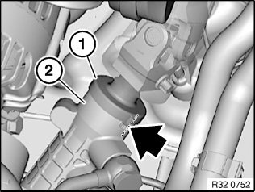
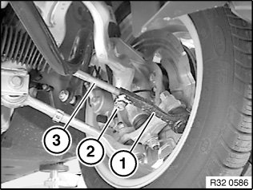
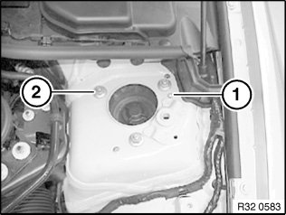
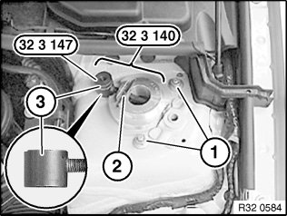
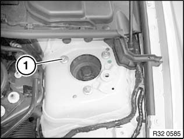
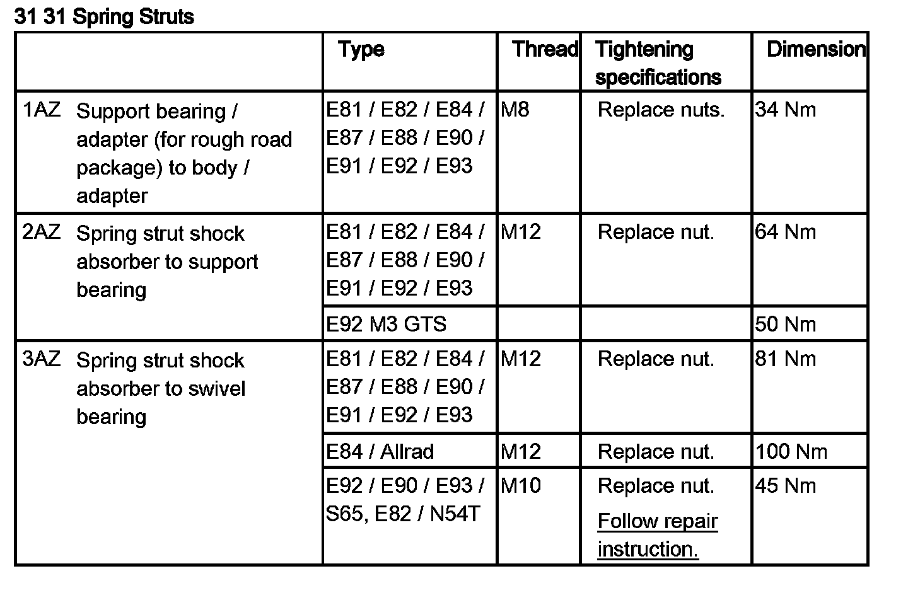
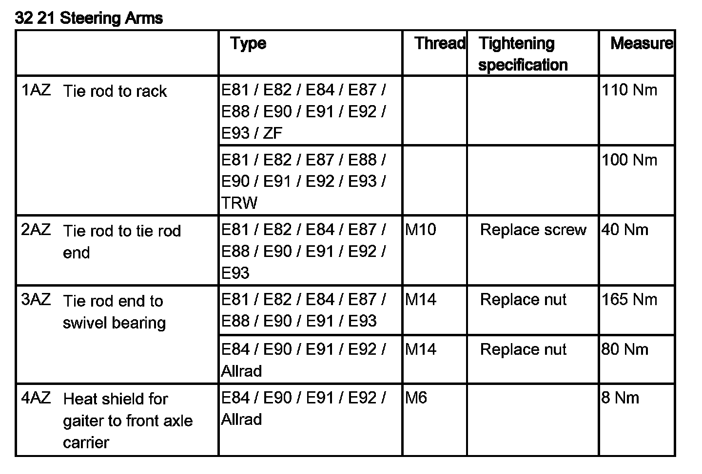

32 00 610 Adjusting Toe-In and Camber on Front Axle
32 00 610 Adjusting toe-in and camber on front axleSpecial tools required:
Important!
Changes in axle geometry caused by accidents must under no circumstances be rectified by camber adjustment!
Note:
Camber and toe-in influence each other. Adjust the toe-in first in order to simplify the adjustment procedure.
The centering pin may only be driven or twisted out if the camber is outside the specified tolerance after toe adjustment.
Version with active front steering:
- Align steering wheel
- Set cumulative steering angle by means of the service function "Carry out initial operation/adjustment for active front steering" to "zero".
- If necessary, secure with steering wheel arrester

Version without active front steering:
Move steering into straight-ahead position by means of markings on cap (1) and steering gear (2).
Align steering wheel and secure with steering wheel arrester.

Adjust toe-in:
Clean thread on tie rod.
Loosen screw (2).
Turn tie rod (3) and if necessary grip tie rod end (1) to adjust toe-in to setpoint value.
Tighten screw (2).
Tightening torque 32 21 2AZ.
If necessary, correct installation position of gaiter.

Adjusting camber:
Remove tension strut for spring strut dome.
Remove protective cap.
Twist/drive out centering pin (1).
Clean wheel arch from below in area of support bearing with compressed air.
Slacken nut (2).

Insert special tool 32 3 140 into opening in wheel arch.
Note:
The spindle 32 3 146 must be aligned in such a way that the short end of the guide sleeve (3) points upwards.
Screw knurled nut 32 3 147 onto stud.
Replace nuts (1) and screw on but do not tighten down fully.
Turn nut (2) of special tool 32 3 140 to adjust camber to setpoint value.
Tighten down nuts (1).
Tightening torque 31 31 1AZ.
Remove special tool 32 3 140.

Replace nut (1) and tighten down.
Tightening torque 31 31 1AZ.
After installation:
^ Check directional stability of car; if necessary, repeat toe-in adjustment

